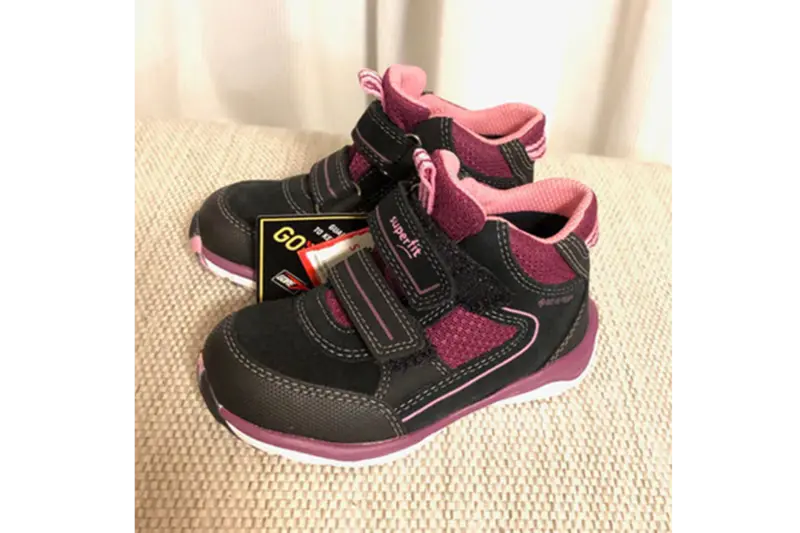
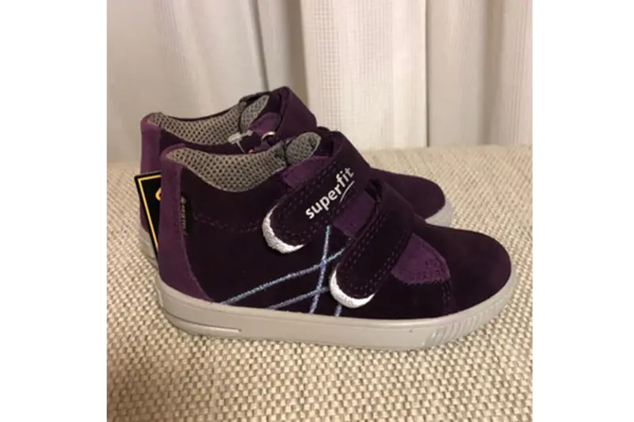
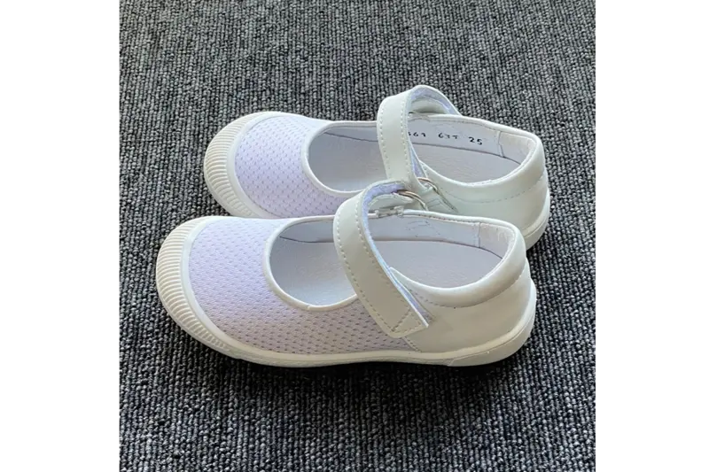

商品からではなく、履く方の足から考えます。
有名なブランドだから、高価だから、誰にでもよい靴になるわけではありません。まず今の足と、何をして歩きたいのかを伺います。そのうえで、形やサイズを合わせ、実際に歩いていただいてから一足を選びます。掲載品をそのままおすすめする商品一覧ではなく、相談の入口としてご覧ください。
婦人靴・ウォーキングシューズ
旧公式サイトでは、ケンプランターのセミオーダー靴、フィンコンフォート、タナー社 Fiori、ニューバランス、ミズノ、パラマウント・ワーカーズ・コープ、あゆみシューズなどをご案内していました。現在の取扱い・サイズ・色・納期は変動するため、ご予約時にご確認ください。
仕事、街歩き、ウォーキング、冠婚葬祭など、履く場面によって必要な一足は変わります。足の計測結果だけで決めず、今お持ちの靴と歩く姿も見て候補をご案内します。
子ども靴・上履き
ANDANTINOはFerse加盟店として、ヨーロッパの子ども靴や、足の特徴に配慮した上履きを扱っています。旧公式サイトではsuperfit、Brancaをご案内していました。成長期のため、購入前に足と靴の適合を確認します。



写真は旧公式サイト掲載時点のものです。現在の色・サイズ・在庫・価格はご予約時にご確認ください。
「あなたを支える靴下」
和歌山で作られたサポート力のある五本趾靴下です。レギュラー丈とショート丈があり、旧公式サイトでは白・黒・ウグイス、SS〜Lサイズをご案内していました。
商品の効能を保証するものではありません。素材、色、サイズ、最新価格、在庫、足との相性はお問い合わせください。
在庫・価格・取り寄せ
靴や関連商品の在庫、価格、入荷時期は変わります。最新情報はお電話・公式LINEでご確認ください。通信販売をご希望の場合は、商品、数量、送料、支払方法、発送予定、返品条件をご確認いただいてからご注文ください。
特定商取引法に基づく表記もご確認ください。
同じサイズ表示でも木型や構造でフィットは異なります。「このメーカーなら大丈夫」と決めず、できる限り店頭で足を測り、踵を合わせて履き、実際に歩いて一緒に確かめましょう。
在庫や取扱いを確認する
お探しの用途・サイズ・お困りのことをお知らせください。